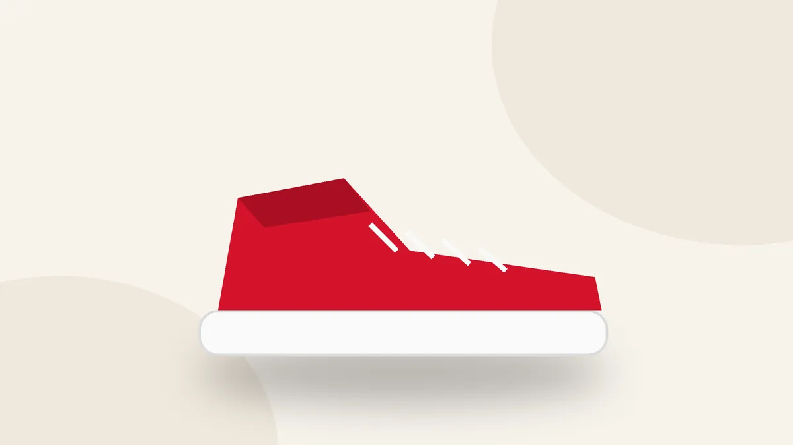

Stair Climbing Workout: Calories, Benefits and a 4-Week Plan
How many calories stair climbing burns, why it is one of the best cheap workouts for legs, heart and trekking, and a simple 4-week plan for beginners.

Stair climbing is one of the cheapest and most effective workouts you can do. It trains your legs, heart and lungs at the same time, needs no equipment, and it is the best way to train for hills and treks if you live somewhere flat. Start with 10 to 15 minutes at an easy pace and build to 30 minutes over four weeks.
How many calories does stair climbing burn?
The 2024 Compendium of Physical Activities lists stair climbing at these energy levels (source):
| Activity | MET | Calories in 30 min (70 kg person) |
|---|---|---|
| Stair climbing, slow pace | 4.5 | about 160 kcal |
| Stair climbing, general | 6.8 | about 240 kcal |
| Ascending and descending stairs | 7.5 | about 260 kcal |
| Stair climbing, two steps at a time | 7.5 | about 260 kcal |
| Stair climbing, fast pace, one step at a time | 9.3 | about 330 kcal |
The calories are estimated as MET x body weight in kg x hours. A heavier person burns more, a lighter person less. Compare that with walking for pleasure, which the same list puts at 3.5 MET.
Benefits of stair climbing
- Strong legs: every step works your thighs, glutes and calves.
- Heart and lungs: it raises your heart rate quickly, even at a slow pace.
- Training for treks and hills: going up trains climbing, and walking down trains the descents that make trekkers sore. Read our 8-week trek plan for flat countries.
- Free and close by: any building, stadium or stairwell works.
- Easy to measure: count floors and you can see your progress every week.
The 4-week beginner plan
Do 3 sessions a week, with a rest day in between. Walk up, then walk down carefully, and repeat. Go at a pace where you can still say a short sentence.
| Week | Session | Target |
|---|---|---|
| 1 | 10 to 15 min of easy up-and-down | Get used to it; stop before your legs burn |
| 2 | 15 to 20 min, a little faster on the way up | Count the floors and write them down |
| 3 | 20 to 25 min; add 3 faster climbs of 1 floor each | Beat week 2’s floor count |
| 4 | 25 to 30 min; add 5 faster climbs | Beat week 3’s floor count |
After week 4, keep 2 or 3 sessions a week, or add a backpack with 3 to 5 kg if you are training for a trek. Want to train at the right effort? Our guide to heart rate zones shows how to use your watch, and zone 2 training explains easy-pace cardio.
Technique tips
- Stand tall and look a few steps ahead, not at your feet.
- Put your whole foot on the step, not just your toes.
- Use the handrail for balance, not to pull yourself up.
- Walk down slowly. Descending is where most slips happen and where knees feel it most.
- Take two steps at a time only once one step at a time feels easy.
Is stair climbing bad for your knees?
For most healthy people, no: it strengthens the muscles that support the knee. If you have knee pain, start with short sessions, go down slowly, use the handrail, and stop if pain is sharp. Leg strength work helps too; start with how to squat properly. See a doctor or physiotherapist if pain lasts.
Stair climbing for weight loss
Stair climbing burns more energy per minute than ordinary walking, so it is a good addition to a weight loss plan. But food still decides most of your result. Pair it with daily walking (how many steps a day) and a sensible calorie target from the calorie deficit calculator.
Frequently asked questions
Is 30 minutes of stair climbing a good workout?
Yes. For a 70 kg person, 30 minutes of general stair climbing burns about 240 kcal and works your legs, heart and lungs together.
Is stair climbing better than walking?
It burns more per minute: about 6.8 MET for general stair climbing compared with 3.5 MET for walking for pleasure. Walking is easier to do for longer, so both have a place.
How many floors should a beginner climb?
Start with what you can do in 10 to 15 minutes at an easy pace, write the number down, and add a few floors each week.
Can stair climbing help me train for Everest Base Camp?
Yes, especially if you have no hills nearby. Add a backpack and longer sessions, and follow our Everest Base Camp training plan.
Should I do stairs every day?
Three sessions a week is plenty for most beginners. Your legs get stronger on the rest days.
Sources
- 2024 Adult Compendium of Physical Activities: walking, stairs and hiking (Herrmann et al., 2024)
- WHO fact sheet: physical activity (World Health Organization)
General information, not medical advice. If you have heart, lung or joint problems, ask your doctor before starting a new exercise.
General information, not medical advice. Ask a doctor if you have a health condition. Results vary from person to person.
Comments
Loading comments…